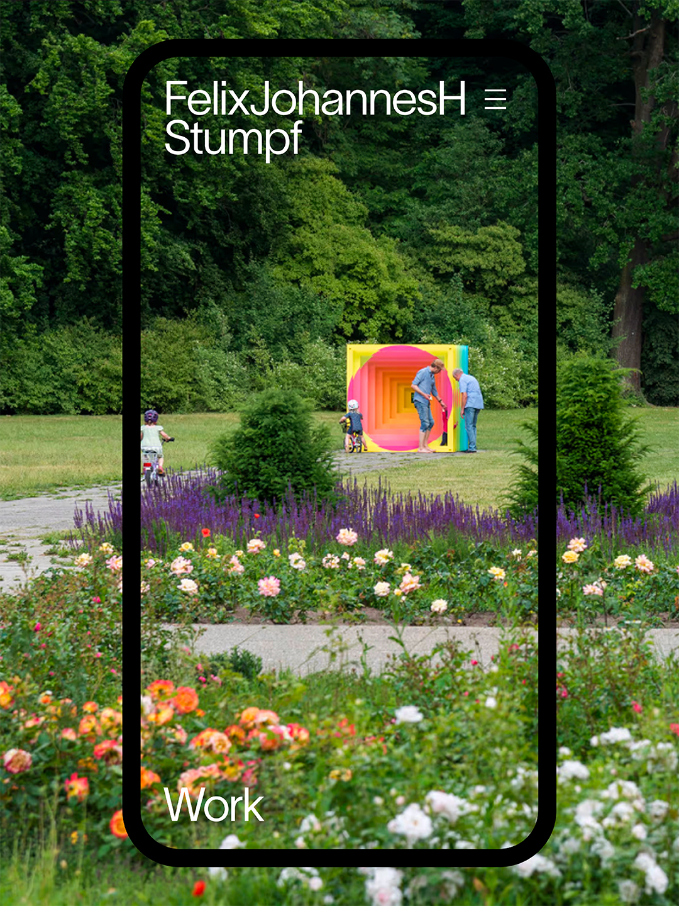
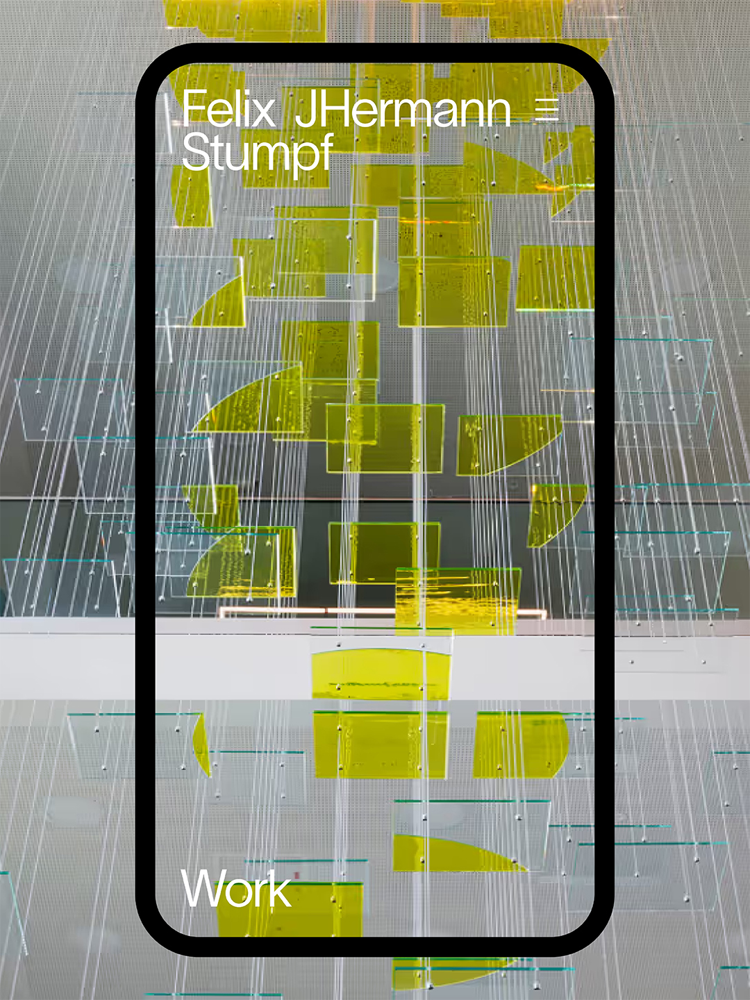
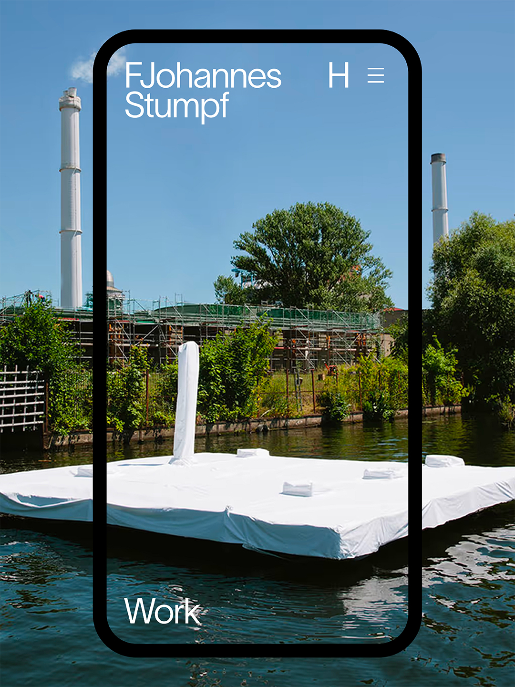
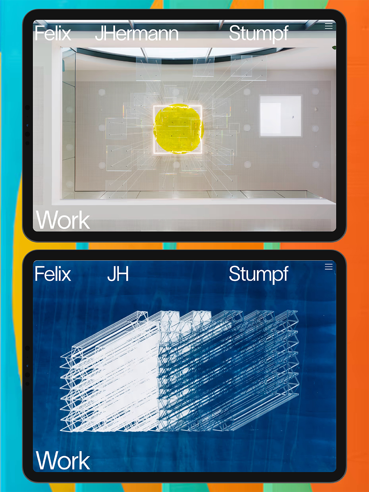
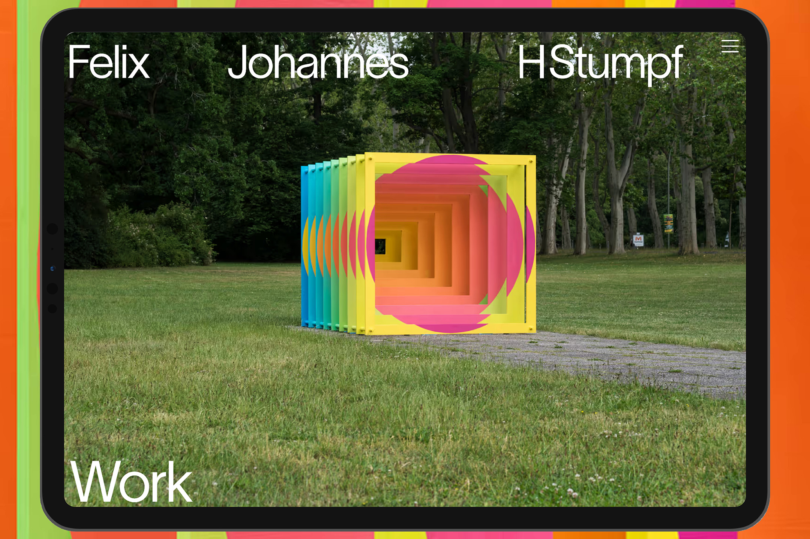
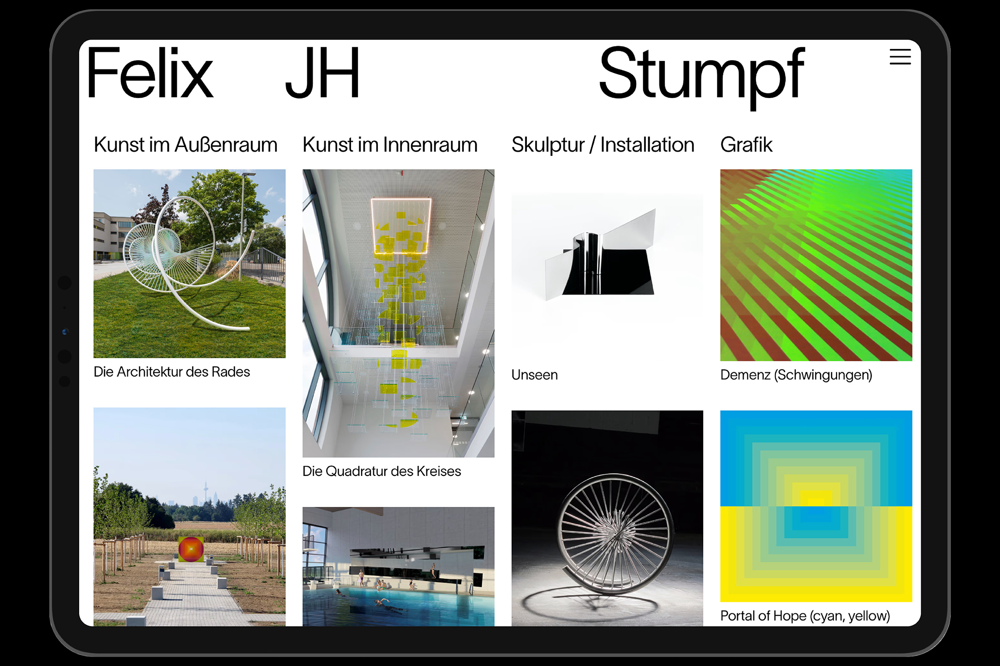
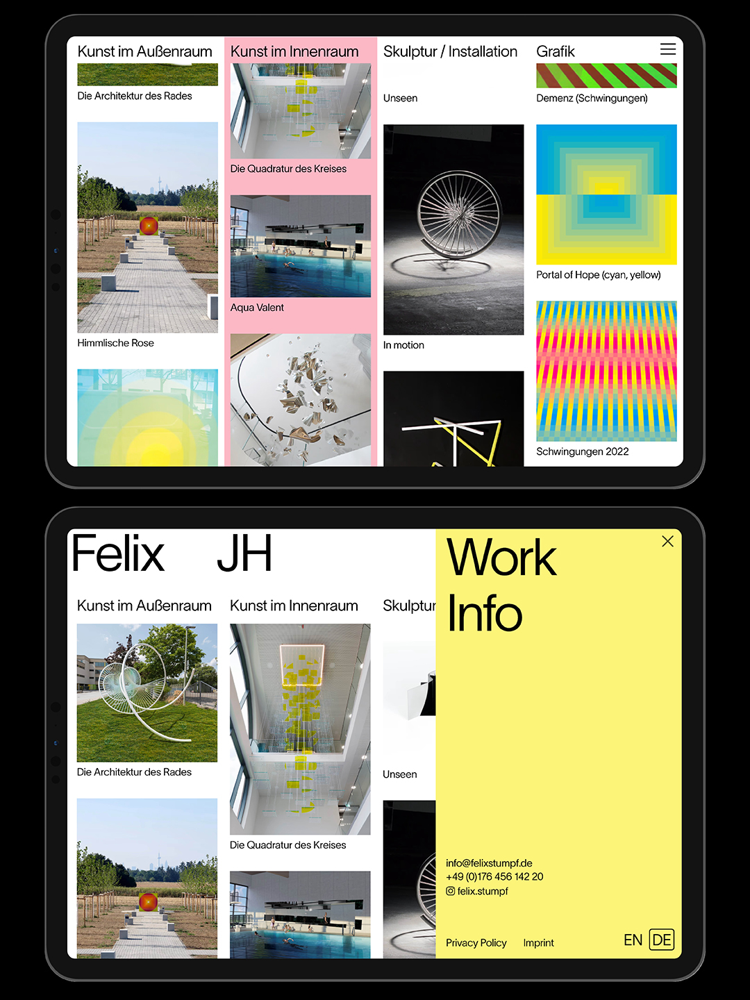
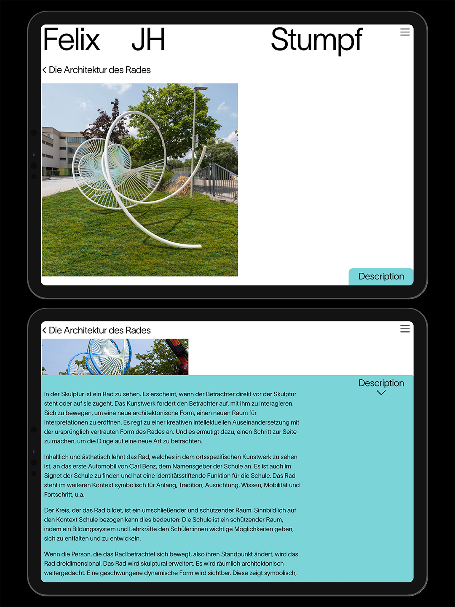
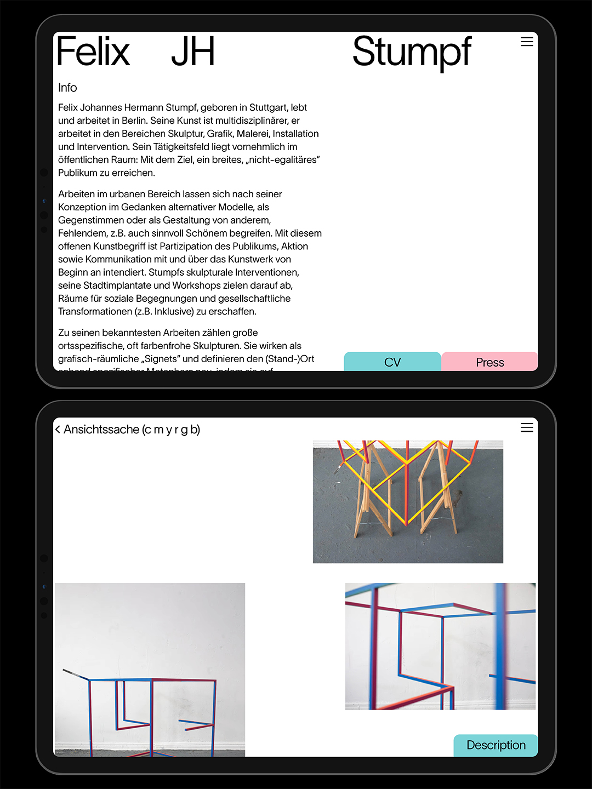
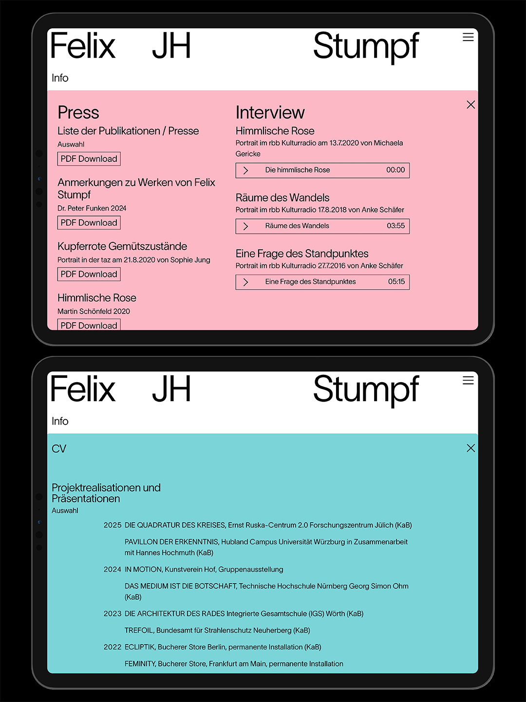

Felix Stumpf’s sculptural interventions, urban implants and workshops aim to create spaces for social encounters and societal transformations. The dialogue of perspectives that can be seen in his works is demonstrated in the logo animation.









